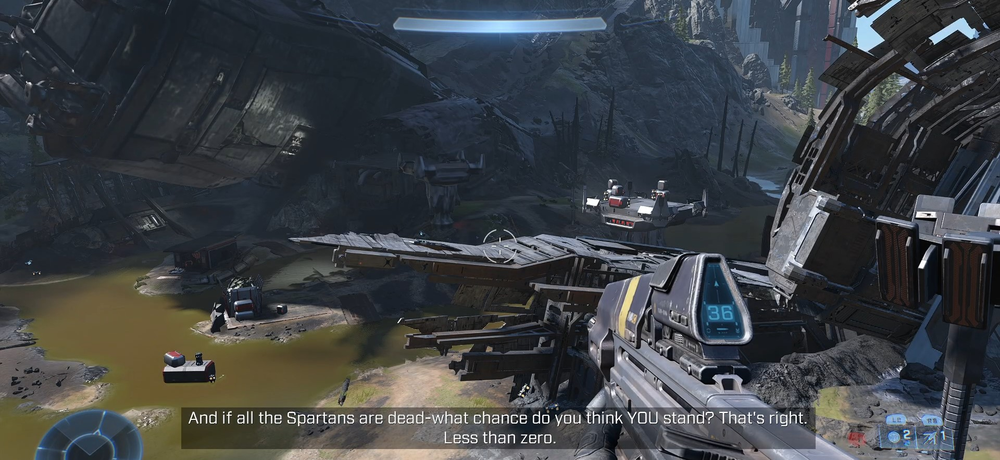
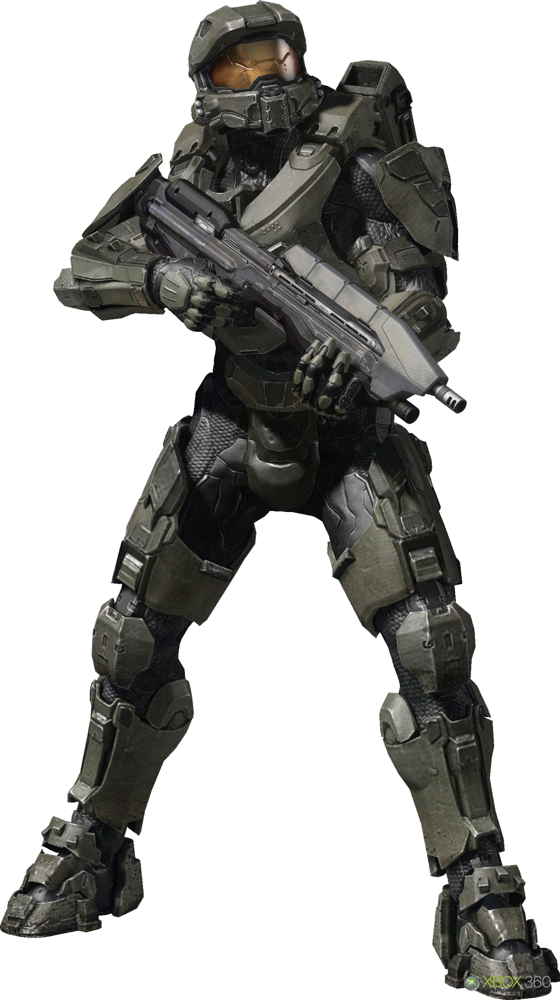

Halo Infinite - El Renacimiento de una Leyenda
Introducción
Halo Infinite (2021) marca el regreso del Jefe Maestro en una aventura que combina lo mejor de los Halo clásicos con innovaciones modernas. Ambientado en el Anillo Zeta Halo, el juego presenta por primera vez un mundo abierto explorable, manteniendo la esencia de la saga. Tras la derrota del UNSC por los Banished, el Jefe debe reunir fuerzas para rescatar a los humanos capturados y descubrir los secretos del anillo.
Con un nuevo motor gráfico (Slipspace Engine), mecánicas de combate refinadas y un enfoque en la exploración, Halo Infinite busca honrar el legado de la saga mientras avanza hacia el futuro.
Misiones Principales
Warship Gbraakon
El Jefe Maestro se infiltra en una nave Banished para rescatar al piloto Echo-216. Esta misión introductoria muestra las nuevas mecánicas de combate y el devastador poder de los Banished.
Foundation
Tras estrellarse en Zeta Halo, el Jefe explora instalaciones Forerunner para encontrar una forma de restaurar el anillo y detener a los Banished.
Outpost Tremonius
Primera misión en mundo abierto donde el Jefe asalta un puesto Banished para establecer FOB Golf. Presenta el sistema de bases de operaciones.
The Tower
El Jefe escala una torre Banished para desactivar sistemas de defensa y rescatar prisioneros del UNSC. Muestra el diseño vertical del mundo.
Excavation Site
Investigación de una excavación Banished que revela secretos sobre Zeta Halo y su conexión con los eventos de Halo Wars 2.
Conservatory
Exploración de una instalación Forerunner que contiene información sobre el "Arma" que los Banished buscan activar.
Spire
El Jefe activa una torre Forerunner para restaurar secciones del anillo, desbloqueando nuevas áreas explorables.
Pelican Down
Rescate de un pelicano derribado que lleva información crucial sobre los planes del War Chief Escharum.
The Sequence
El Jefe y el Arma intentan detener la activación del "Arma" mientras descubren la verdad sobre Cortana en Zeta Halo.
House of Reckoning
Asalto a la fortaleza de Escharum para enfrentar al War Chief en un combate épico que decide el destino de Zeta Halo.
Personajes Clave
| Personaje | Rol | Importancia | Imagen |
|---|---|---|---|
| Jefe Maestro (John-117) | Protagonista | Último Spartan-II en pie que lidera la resistencia contra los Banished |  |
| El Arma (The Weapon) | IA | Nueva IA creada para contener a Cortana, se convierte en compañera del Jefe | |
| Fernando Esparza | Piloto | Piloto del UNSC que ayuda al Jefe Maestro como su apoyo logístico | |
| War Chief Escharum | Antagonista | Líder de los Banished en Zeta Halo y mentor de Atriox | |
| Jega 'Rdomnai | Antagonista | Elite mercenario al servicio de Escharum, cazador de Spartans | |
| Atriox | Antagonista | Líder de los Banished que aparece en escenas post-créditos |
Nuevas Armas, Equipamiento y Vehículos
Rifle de Asalto MA40
Versión mejorada del rifle estándar con cargador más grande y menor retroceso.
Pistola Mangler (Banished)
Revólver de proyectiles pesados que causa gran daño a corta distancia.
Disruptor (Banished)
Pistola eléctrica que daña múltiples objetivos y desactiva vehículos.
Carcaj (Equipamiento)
Dispositivo que permite al Jefe usar el gancho para moverse rápidamente.
Pantalla de Amenaza (Equipamiento)
Genera un campo que detiene proyectiles enemigos.
Razorback
Versión mejorada del Warthog con capacidad para más pasajeros y equipamiento.
Wasp
Aeronave ligera con cañones automáticos y misiles.
Skewer (Banished)
Lanzador de proyectiles masivos que atraviesa vehículos y enemigos.
Facciones
UNSC
Fuerzas humanas dispersas tras la derrota inicial. El Jefe Maestro debe reunirlas.
Unidades: Marines, Spartan-IVs, Echo-216
Los Banished
Facción Covenant rebelde que ahora controla Zeta Halo bajo Escharum.
Unidades: Brutes, Elites, Grunts, Hunters
Mundo Abierto de Zeta Halo
Halo Infinite introduce por primera vez un mundo abierto en la saga con:
- Exploración libre en secciones del anillo Halo
- Misiones secundarias y objetivos opcionales
- Sistema de Bases de Operaciones (FOBs) que se pueden capturar
- Enemigos y patrullas dinámicas
- Secretos y coleccionables ocultos
- Torres de señal que revelan áreas del mapa
- Misiones de rescate de Marines prisioneros
El diseño combina la estructura clásica de Halo con la libertad de un sandbox moderno.
Calaveras (Skulls)
Sistema de Calaveras en Halo Infinite
Halo Infinite vuelve al sistema clásico donde las calaveras deben encontrarse en el mundo de juego para desbloquear sus efectos. Hay 12 calaveras ocultas en Zeta Halo, cada una con un modificador único.
Efectos de las Calaveras
- Boom: Explosiones más grandes al morir
- Grunt Birthday Party: Grunts explotan en confeti con disparos en la cabeza
- IWHBYD: Activa diálogos raros y divertidos
- Blind: Oculta el HUD y la mira
- Black Eye: Escudos solo se recargan con daño cuerpo a cuerpo
- Catch: Enemigos lanzan más granadas
- Fog: Desactiva el sensor de movimiento
- Famine: Las armas contienen la mitad de munición
- Thunderstorm: Enemigos aparecen con rangos superiores
- Tilt: Los escudos enemigos son más resistentes
- Mythic: Enemigos tienen el doble de salud
- Bandana: Munición infinita y sin recarga (exclusiva de Infinite)
Para encontrar calaveras en Halo Infinite:
- Explora áreas fuera del camino principal, especialmente en estructuras altas
- Algunas requieren el uso del gancho para alcanzarlas
- Emiten un sonido característico cuando estás cerca
- Una vez encontradas, se pueden activar en el menú de campaña
- La calavera Bandana solo aparece después de completar la campaña
Legado de Halo Infinite
Halo Infinite representa un nuevo comienzo para la franquicia con:
- Motor Slipspace: Gráficos modernos que mantienen el estilo clásico de Halo
- Mundo abierto: Primera incursión en diseño sandbox para la campaña
- Combate refinado: Mezcla de lo mejor de Halo clásico y moderno
- Multijugador free-to-play: Nuevo modelo de negocio para el componente online
- Historia íntima: Enfoque en el Jefe Maestro y su relación con el Arma
- Actualizaciones continuas: Modelo de juego como servicio con nuevo contenido
Aunque el lanzamiento tuvo algunos problemas técnicos, Infinite ha sido bien recibido por devolver a la franquicia a sus raíces mientras introduce innovaciones frescas.
El Futuro de la Saga
Halo Infinite sienta las bases para el futuro de la franquicia:
- La aparición de Atriox en los créditos sugiere su regreso como principal antagonista
- El destino de Cortana y la naturaleza del Arma dejan preguntas sin responder
- El Anillo Zeta sigue siendo un misterio con muchos secretos por descubrir
- Las actualizaciones estacionales continúan expandiendo la historia
- El modelo de juego como servicio promete años de soporte y contenido
Con su mezcla de nostalgia e innovación, Halo Infinite busca ser la plataforma para la saga durante la próxima década.